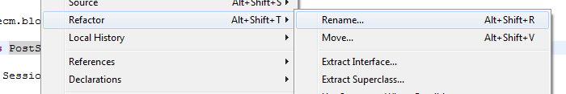
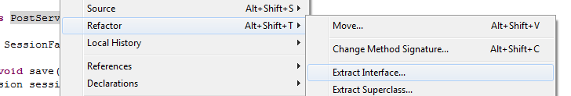

Spring est un framework permettant la création d'application d'enteprise. Il propose :
En pratique, spring simplifie grandement l'écriture d'applications.
Avant de commencer, nous allons rajouter les jar nécessaires à spring dans le pom.xml.
<dependency>
<groupId>org.springframework</groupId>
<artifactId>spring-core</artifactId>
<version>3.0.5.RELEASE</version>
<scope>compile</scope>
</dependency>
<dependency>
<groupId>org.springframework</groupId>
<artifactId>spring-beans</artifactId>
<version>3.0.5.RELEASE</version>
<scope>compile</scope>
</dependency>
<dependency>
<groupId>org.springframework</groupId>
<artifactId>spring-context</artifactId>
<version>3.0.5.RELEASE</version>
<scope>compile</scope>
</dependency>
<dependency>
<groupId>org.springframework</groupId>
<artifactId>spring-orm</artifactId>
<version>3.0.5.RELEASE</version>
<scope>compile</scope>
</dependency>
<dependency>
<groupId>org.springframework</groupId>
<artifactId>spring-test</artifactId>
<version>3.0.5.RELEASE</version>
<scope>test</scope>
</dependency>
<dependency>
<groupId>javax.inject</groupId>
<artifactId>javax.inject</artifactId>
<version>1</version>
</dependency>
Et on peut faire un mvn eclipse:eclipse.
Nous allons partir de notre application et la faire évoluer afin de profiter de spring.
Toute application utilisant spring doit définir un context : c'est l'ensemble des objets qui constituent l'application.
La première étape consiste à définir un fichier PostServiceTest-context.xml dans le package edu.ecm.blog.service coté tests.
<?xml version="1.0" encoding="UTF-8"?> <beans xmlns="http://www.springframework.org/schema/beans" xmlns:xsi="http://www.w3.org/2001/XMLSchema-instance" xsi:schemaLocation=" http://www.springframework.org/schema/beans classpath:org/springframework/beans/factory/xml/spring-beans-3.0.xsd" > </beans>
C'est dans ce fichier que seront définis les beans de notre application.
Afin que maven prennent en compte les fichiers xml dans src/test/java nous ajoutons la configuration suivante dans le pom (voir configuration des resources) :
<build>
<testResources>
<testResource>
<directory>${basedir}/src/test/java</directory>
<includes>
<include>**/*.xml</include>
</includes>
</testResource>
</testResources>
</build>
Et dans le test unitaire, on rajoute les annotations suivantes :
@RunWith(SpringJUnit4ClassRunner.class)
@ContextConfiguration
public class PostServiceTest {
...
}
Le test unitaire passe encore mais nous n'avons encore pas faire grand chose : un contexte spring est instancié et existe pendant la durer de notre test.
La première chose que nous allons faire est de définir notre session factory dans le contexte spring. Dans PostServiceTest-context.xml
<?xml version="1.0" encoding="UTF-8"?>
<beans xmlns="http://www.springframework.org/schema/beans" xmlns:xsi="http://www.w3.org/2001/XMLSchema-instance"
xsi:schemaLocation="
http://www.springframework.org/schema/beans
classpath:org/springframework/beans/factory/xml/spring-beans-3.0.xsd" >
<!-- factory bean pour la SessionFactory hibernate -->
<bean id="sessionFactory" class="org.springframework.orm.hibernate3.annotation.AnnotationSessionFactoryBean">
<property name="hibernateProperties">
<bean class="org.springframework.beans.factory.config.PropertiesFactoryBean">
<property name="properties">
<props>
<prop key="hibernate.dialect">org.hibernate.dialect.DerbyDialect</prop>
<prop key="hibernate.connection.url">jdbc:derby:target/testdb;create=true</prop>
<prop key="hibernate.connection.driver_class">org.apache.derby.jdbc.EmbeddedDriver</prop>
<prop key="hibernate.hbm2ddl.auto">update</prop>
</props>
</property>
</bean>
</property>
<property name="packagesToScan" value="edu.ecm.blog.domain"/>
</bean>
</beans>
C'est une configuration équivalente à ce que nous avions dans notre méthode createSessionFactory(). Nous pouvons donc supprimer cette méthode.
@Before public void createSessionFactory() { Configuration configuration = new Configuration(); configuration.setProperty("hibernate.dialect", "org.hibernate.dialect.DerbyDialect"); configuration.setProperty("hibernate.connection.url", "jdbc:derby:target/testdb;create=true"); configuration.setProperty("hibernate.connection.driver_class", "org.apache.derby.jdbc.EmbeddedDriver"); configuration.setProperty("hibernate.hbm2ddl.auto", "create-drop"); configuration.addAnnotatedClass(Author.class); configuration.addAnnotatedClass(Post.class); sessionFactory = configuration.buildSessionFactory(); }
En échange, on injecte la session factory définie dans notre contexte de notre test.
@Inject private SessionFactory sessionFactory;
Et nous n'avons plus besoin de fermer la SessionFactory nous même.
@After
public void cleanDb() {
Session session = sessionFactory.openSession();
Transaction transaction = session.beginTransaction();
session.createQuery("delete from Post").executeUpdate();
transaction.commit();
session.close();
sessionFactory.close();
}
Du code java contre du xml, pour le moment nous n'avons pas gagné grand chose. Mais les tests unitaires devraient encore passer.
Ensuite on ajoute notre service dans le contexte spring.
<bean class="edu.ecm.blog.service.PostService" />
Une instance de la classe PostService sera donc chargée dans le contexte spring.
On profite du fait que notre bean soit géré par spring afin de supprimer la méthode setSessionFactory de notre PostService.
@Inject private SessionFactory sessionFactory;
Et dans le test unitaire, plus besoin d'instancier notre service nous même. On échange donc :
PostService postService = new PostService(); postService.setSessionFactory(sessionFactory);
contre
@Inject private PostService postService;
Les tests passent encore, on a gagné quelques lignes de code.
Nous allons maintenant nous séparer de la gestion du session.close() en cas d'erreur. On va rendre tout notre code transactionnel dans le même temps.
En premier, nous allons devoir extraire une interface à partir de notre service. C'est une contrainte lié au langage java qui ne peut générer des proxies qu'a partir d'une interface.
Heureusement, eclipse va nous aider un peu.
Dans elipse, on fait un rename de la classe PostService vers PostServiceImpl (click droit sur la classe).
Puis on extrait une interface PostService à partir de notre classe (click droit sur la classe).
Il faut sélectionner les 4 méthodes et ne pas prendre l'option "Declare interface methods as 'abstract'".
Ne reste qu'a changer la définition du bean dans le contexte.
<bean class="edu.ecm.blog.service.PostServiceImpl" />
En effet PostService est maintenant une interface, donc on ne peut pas l'instancier.
Une interface plus tard, les tests passent toujours.
Maintenant on ajoute un @Transactional sur les 4 méthodes de l'implémentation et on peut retirer toute la gestion de la fermeture de la session.
Par exemple, la méthode save devient :
@Override
@Transactional
public void save(Post post) {
Session session = sessionFactory.getCurrentSession();
session.save(post);
}
Cela simplifie grandement nos méthodes, nous libérant ainsi d'une partie répétivite et sujette à bugs.
Pour que les tests unitaires passent il faut quand même rajouter un peu de configuration dans le fichier xml.
<beans xmlns="http://www.springframework.org/schema/beans" xmlns:xsi="http://www.w3.org/2001/XMLSchema-instance" xmlns:tx="http://www.springframework.org/schema/tx" xsi:schemaLocation=" http://www.springframework.org/schema/beans classpath:org/springframework/beans/factory/xml/spring-beans-3.0.xsd http://www.springframework.org/schema/tx classpath:org/springframework/transaction/config/spring-tx-3.0.xsd" > ... <!-- ajoute un gestionnaire de transactions lié à la sessionFactory --> <bean id="transactionManager" class="org.springframework.orm.hibernate3.HibernateTransactionManager"> <property name="sessionFactory" ref="sessionFactory"/> </bean> <!-- active le support des annotations @Transactional --> <tx:annotation-driven transaction-manager="transactionManager"/> ... </beans>
C'est maintenant le contexte spring qui va gérer les ouvertures et fermeture de sessions et les transactions.
Si tout va bien, les test passent toujours.
La mise en place de la configuration spring peut sembler un peu lourde par rapport au gain en ligne de code mais :
Il existe une petite optimisation possible lors de l'utilisation des @Transactional
En effet, si la relation avec la base de faire en lecture seule, alors il vaut mieux l'indiquer via la notation :
@Transactional(readOnly = true)
Cela indique à spring (et donc aussi à hibernate) qu'il n'y aura pas d'écriture en base à la fin des opérations sql. Certaines vérifications n'auront donc pas à être appliquées et donc on gagnera un peu en performance.
Si on tente de marquer une méthode comme étant en read only alors que ce n'est pas le cas, on obtient une erreur.
Caused by: ERROR 25502: An SQL data change is not permitted for a read-only connection, user or database.
Jusqu'a présent, nous avons utilisé le pool de connextion fourni par hibernate qui ne manque pas de nous le dire :
Using Hibernate built-in connection pool (not for production use!)
Un pool de connexion permet d'optimiser la gestion des connexions en prêtant un nombre fini de connexions à des demandeurs. Cela évite d'ouvrir et fermer des liaisons avec la base données, ce qui est assez couteux.
On utilise le pool fourni par la fondation apache.
<dependency>
<groupId>commons-dbcp</groupId>
<artifactId>commons-dbcp</artifactId>
<version>1.4</version>
<scope>compile</scope>
</dependency>
On donc modifier la définition de la SessionFactory dans notre contexte spring.
<!-- pool de connexion --> <bean id="dataSource" class="org.apache.commons.dbcp.BasicDataSource" destroy-method="close"> <property name="driverClassName" value="org.apache.derby.jdbc.EmbeddedDriver"/> <property name="url" value="jdbc:derby:target/testdb;create=true"/> <property name="username" value=""/> <property name="password" value=""/> </bean> <!-- factory bean pour la SessionFactory hibernate --> <bean id="sessionFactory" class="org.springframework.orm.hibernate3.annotation.AnnotationSessionFactoryBean"> <property name="dataSource" ref="dataSource" /> <property name="hibernateProperties"> <bean class="org.springframework.beans.factory.config.PropertiesFactoryBean"> <property name="properties"> <props> <prop key="hibernate.dialect">org.hibernate.dialect.DerbyDialect</prop> <prop key="hibernate.hbm2ddl.auto">update</prop> </props> </property> </bean> </property> <property name="packagesToScan" value="edu.ecm.blog.domain"/> </bean>
Nous avons un pool qui supporte la production et Hibernate est content.
De plus, nous n'avons pas eu a changer une seule ligne de notre test ou de notre service.
Maintenant que coder un service est devenu plus simple, nous allons en coder un second : le TagCloudService
Voici l'interface TagCloudService à placer dans le package edu.ecm.blog.service :
public interface TagCloudService {
public TagCloud buildTagCloud();
}
Le but est donc de réaliser la classe TagCloudServiceImpl qui implémente se service.
Comme d'habitude, on commence pas écrire un test unitaire.
@RunWith(SpringJUnit4ClassRunner.class)
@ContextConfiguration
public class TagCloudServiceTest {
@Inject
private SessionFactory sessionFactory;
@Inject
private TagCloudService tagCloudService;
@After
public void cleanDb() {
Session session = sessionFactory.openSession();
Transaction transaction = session.beginTransaction();
session.createQuery("delete from Post").executeUpdate();
transaction.commit();
session.close();
}
@Test
public void buildTagCloud() {
saveSomePosts();
TagCloud tagCloud = tagCloudService.buildTagCloud();
Assert.assertEquals(4, tagCloud.size());
Assert.assertTrue(tagCloud.contains("java"));
Assert.assertTrue(tagCloud.contains("python"));
}
private void saveSomePosts() {
Session session = sessionFactory.openSession();
Transaction transaction = session.beginTransaction();
session.save(buildPost("java,cobol"));
session.save(buildPost("java,python"));
session.save(buildPost("ruby,python"));
session.save(buildPost("nodejs"));
transaction.commit();
session.close();
}
private Post buildPost(String tags) {
Post post = new Post();
post.setTitle("test title");
post.setTags(tags);
return post;
}
}
Définissez le contexte spring et codez la classe TagCloudServiceImpl afin que ce test passe.
Voici quelques indices :